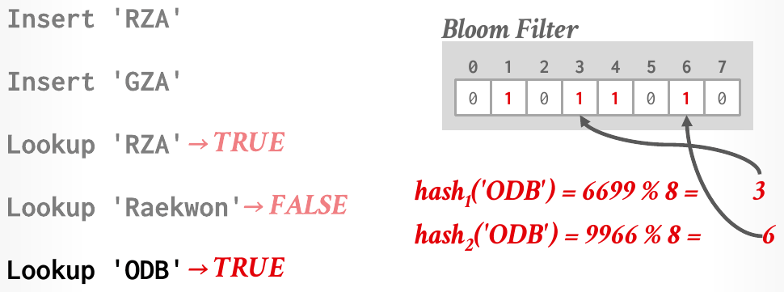
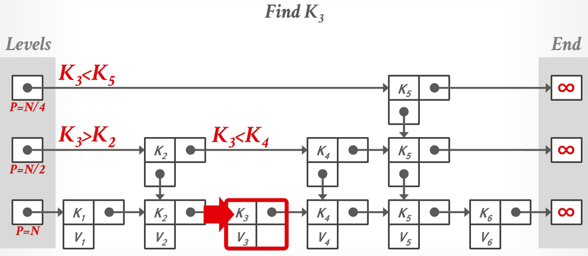
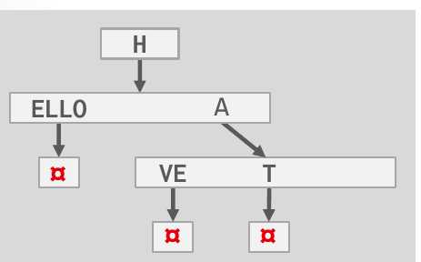

Database Internals in Go · Unit 3 · Lesson 6
Filters and Other Indexes: Bloom Filters, Skip Lists, Tries, and More
Trace Bloom filter inserts and lookups, search a skip list, build and compress a trie into a radix tree, and pick the structure that fits a query, from inverted indexes for keywords to vector indexes for similarity, including HW3's Q4 and Q5.
The B+tree is the default index, and Lecture #09 ends by saying so again. It answers one kind of question: where are the tuples with this key, or with keys in this range? Other structures answer other questions, or the same one more cheaply. A filter tells you, from a few bits, whether a key could be in a set at all, and a skip list keeps keys in order without ever rebalancing. A trie can report a missing key before it reaches a leaf. Inverted and vector indexes find the records that contain a word or that resemble a query, which a B+tree can't do.
Lesson 2: what does a lookup in a chained hash table do, and when does it get slow?
Unit 1, Lesson 3: in a log-structured store, GET(key101) doesn't find the key in the MemTable. What does the in-memory SummaryTable let the DBMS do next?
Unit 0, Lesson 2: in a SQL LIKE pattern, what do % and _ match?
Indexes and filters
Lecture #09 separates two kinds of structure. An index, like the B+tree, answers where: it is organized so that the DBMS can find the location of the tuples with a given key. A filter answers whether: it tells you if a key is (probably) in a set, but not where it is. The point of a filter is the negative answer. If the filter says a key isn't there, the DBMS skips the work of looking for it.
You have met two uses already. In Lesson 2, each bucket pointer of a chained hash table carried a filter, so that Get G could stop without scanning the chain. In Unit 1, Lesson 3, an LSM's SummaryTable kept a key filter per level, so that a GET could skip SSTables. The notes conclude that a DBMS needs both indexes and filters, and that a filter in front of an index can speed it up.
Bloom filters
A Bloom filter is a bitmap plus k hash functions. It supports only two operations:
- Insert(x): compute each hash function on x, take the result modulo the bitmap's size, and set that bit to 1.
- Lookup(x): compute the same bit positions and check them. If any of them is 0, return false. If all are 1, return true.
A false answer is always right: if x had been inserted, all its bits would be 1. So a Bloom filter never gives a false negative. A true answer can be wrong, because other keys may have set every one of x's bits between them. That is a false positive, and after a true answer the DBMS still has to look in the real data. The notes say a Bloom filter is defined by two parameters, the size of the bitmap and the number of hash functions, and slide 5 links a Bloom Filter Calculator for the false-positive rate they give. A key also can't be deleted. Clearing its bits could clear bits that other keys also set, and those keys would then turn into false negatives.

Two consequences come up in HW3. More hash functions don't always help: each one sets another bit per key, so the bitmap fills up faster, and the official solution notes that more hash functions can raise the false-positive rate through overlapping bits. And a filter doesn't replace an index for exact-match lookups. Even a perfect "maybe" still needs a look in the data, and the solution says a hash index is the better tool for that.
Slide 7 lists three other filters. A counting Bloom filter keeps an integer per position instead of a bit, counting how many keys set it, so keys can be removed by decrementing. A cuckoo filter is a cuckoo hash table, as in Lesson 1, that stores a short fingerprint of each key instead of the key, and it also supports removal. A succinct range filter (SuRF), from CMU, is an immutable compact trie that answers approximate exact-match queries and range queries.
A Bloom filter in Go is a []uint64: bit i lives in word i/64, so an insert does bits[i/64] |= 1 << (i % 64) and a lookup tests the same bit with &. The k hash functions can be one function with k seeds, the way Lesson 1 described cuckoo hashing. Lesson 1's caveat about hash/maphash applies too: its seeds are random per process, which is fine for a filter that lives in memory, but a filter saved next to an SSTable has to give the same bits after a restart, so it needs a hash with a fixed seed.
#09 Indexes & Filters II, "Bloom filters" (3:39), slides 5–6: the Bloom filter's operations and the RZA, GZA and ODB example, step by step.
Skip lists
The simplest ordered structure that grows and shrinks is a sorted linked list, but every operation on it is a linear search, O(n). A skip list adds more linked lists on top of it. The bottom level holds every key in sorted order, the level above links about every second key, the next about every fourth, and so on: each level has about half the keys of the one below. A search starts at the top level, moves right while the next key is smaller than the target, and drops down a level when it would overshoot. That gives approximately O(log n) searches, and the keys stay sorted without any global rebalancing.

To insert a key, the skip list flips a coin to decide how many levels the new node joins: it always joins the bottom level, and each successful flip adds it to one more level above. The notes give the order: link the node in from the bottom level up, so that a reader on another thread never finds a node on a high level with nothing below it. If each level is a singly linked list, linking in at one level is one atomic swap of a next pointer, and the notes say no latch is needed. Lesson 7 covers that instruction, compare-and-swap.
A delete happens in two steps. First the key is removed logically: a flag on the node tells other threads to ignore it. Then it is removed physically, unlinked from every level, once no other thread can still be holding a reference to it. The notes say a background thread usually does the physical removal at intervals, unlinking the top level before the bottom one so the structure stays intact.
Slide 14 weighs the result. A skip list may use less memory than a B+tree, if it has no reverse pointers, and inserts and deletes never rebalance anything. But it is not disk or cache friendly, because consecutive keys sit in nodes scattered in memory, and searching in reverse is hard. Skip lists are therefore mostly used in memory. The LSM MemTable from Unit 1, Lesson 3 is the slide's example, in systems such as RocksDB and WiredTiger.
#09 Indexes & Filters II, "Skip list operations" (17:40), slides 10–14: inserting with coin flips, the search above, the two-step delete and the trade-offs.
Tries
A B+tree's inner keys can't tell you whether a key exists, because separators are only guide posts. Every lookup goes down to a leaf, at the cost of at least one buffer pool page access per level, just to learn that a key isn't there. A trie, also called a digital search tree or prefix tree, can stop earlier. It breaks each key into digits, such as characters or bits, and examines them one at a time: each level of the tree handles one digit, and the path from the root to a leaf spells out a key.
![Left, text: Use a digital representation of keys to examine prefixes one-by-one, aka Digital Search Tree, Prefix Tree. Shape depends on keys and lengths; does not depend on existing keys or insertion order; does not require rebalancing operations. All operations have O(k) complexity where k is the length of the key; path to a leaf node represents a key; keys are stored implicitly and can be reconstructed from paths. Right: Keys HELLO, HAT, HAVE. A trie with root H, then a node holding A and E. Under A, a node with T and V; T leads to an end marker, V leads to E and then an end marker. Under E, the chain L, L, O, then an end marker. The path H, E, L, L, O is outlined in red.](../assets/slides/L09-trie-p45.png)
The slide lists the properties. A trie's shape depends only on the keys and their lengths, not on the order in which they were inserted or on which other keys exist, so it never needs rebalancing. Every operation costs O(k), where k is the length of the key, however many keys the trie holds. And the keys are stored implicitly: you can rebuild each one from its path.
The span of a trie level is the number of bits each digit represents. It sets the fanout and the tree's height: an n-way trie has a fanout of n. If a digit exists among the stored keys, its slot holds a pointer to the next level; otherwise it holds null. The lecture's 1-bit span trie for three 16-bit keys starts with a long chain of nodes that each have one child, drawn as "Repeat 10x", because all three keys begin with the same run of zero bits. The notes describe two compressions. Horizontal compression stores a node as an array instead of a map when the span is known. Vertical compression removes the chains of single-child nodes.
Radix trees
A trie with vertical compression is a radix tree; slide 19 also gives the name Patricia tree. Every chain of nodes with a single child is merged into one node holding the whole substring. The cost is that the full key is no longer embedded along the path, so a lookup can match a key that isn't really there. The slide says the DBMS therefore always checks the original tuple to confirm a match. Radix trees are common in practice; DuckDB, which you used in Unit 0, is one of the systems on the slide.

Three properties of radix trees come up in HW3. They are efficient for prefix queries: all keys with a given prefix sit in one subtree. Unlike a B+tree, whose nodes must stay at least half full, a radix tree has no requirement on how many entries a node or level holds, and it needs no rebalancing; its shape follows from the keys. And when many keys share prefixes, it can take less space than a B+tree, because a shared prefix is stored once. What it can't do efficiently is a substring search such as LIKE '%xyz%': a match can start anywhere in a key, so no single subtree holds the answers.
Slide 21 lists radix-tree variants: Judy arrays from HP, a 256-way radix tree and the first with an adaptive node representation; ART, from the HyPer system; Masstree, a B+tree with a trie inside each node; and SuRF.
#09 Indexes & Filters II, "Radix trees" (28:45), slides 17–21: key span, compressing a trie into a radix tree, inserts and deletes, and the variants.
Inverted indexes
Every index so far serves point and range queries on a key. None helps with keyword search, such as finding every Wikipedia article that contains the word "Pavlo", which in SQL is WHERE content LIKE '%Pavlo%'. The leading % means the word can start anywhere, so there is no key prefix to search on.
An inverted index stores a mapping from terms to the records that contain them in the indexed attribute. It is also called a full-text search index; the slide says it was originally called a concordance, in the 1200s. Its two parts are a dictionary of terms and, for each term, a posting list of record IDs, the same name Lesson 5 used for deduplicated leaf entries.
![Left, text: An inverted index stores a mapping of terms to records that contain those terms in the target attribute; sometimes called a full-text search index; originally called a concordance (1200s). Many major DBMSs support these natively, but there are also specialized DBMSs and libraries. Right, a table revisions(id, content) with rows 11, 22, 33 and 44, each holding a paragraph of text. Below, a Dictionary with entries Wu-Tang 2, Carnegie 3 and Database 2, labelled Term / Frequency, each pointing to a Posting List: 11 and 44; 22, 33 and 44; 33 and 44.](../assets/slides/L09-inverted-index-p67.png)
The lecture looks at two implementations:
- Lucene, a specialized inverted index engine, finds a term's offset in the dictionary with a finite state transducer: a trie-like structure with a weight on each edge, where the weights summed along a term's path give its position. The transducer is immutable, so new terms go into new segments that a background job merges, and the immutable dictionary can use Unit 1, Lesson 5's delta encoding and bit-packing.
- PostgreSQL's Generalized Inverted Index (GIN) keeps the term dictionary in a B+tree. A term with few records has a sorted list of record IDs as its value; a term with many gets a second B+tree, a posting tree. A separate pending list collects updates and applies them in bulk, much like the mod logs in Lesson 5.
Search engines add rankings and tokenizers on top. Rankings order the results by how often a term appears in a record compared with other records; the slide names TF-IDF and BM25. Tokenizers split terms into n-grams, so that "Wu-Tang" becomes the trigrams WuT, uTa, Tan and ang, which supports fuzzy search and autocomplete.
Vector indexes
An inverted index matches words, not meaning. An application that wants "hip-hop groups with songs about slinging" needs semantic similarity. A machine-learning model, such as a transformer, turns each record into an embedding, an array of floating-point numbers, so that records with similar meanings get embeddings that are close together. A vector index is a structure for nearest-neighbor search over embeddings. The lecture gives two kinds:
- Inverted (IVF): cluster the vectors, for example with k-means, and build an inverted index from each cluster's centroid to the records in that cluster. A search finds the nearest centroid and scans its list, and can also check nearby clusters to improve accuracy. The slide's examples are IVFFlat and pgvector.
- Graph: each vector is a node with edges to its nearest neighbors. A search enters the graph and greedily follows the edge that moves closest to the query. HNSW stacks several such graphs in levels, with the same idea as a skip list's levels.
Two things set these apart from every other index in the unit. Queries often need a filter as well, such as year > 2005, applied before or after the vector search. And there is no exact right answer: slide 29 says correctness depends on whether the result "feels right".
Work it out
-
What to think about
Each insert sets one bit per hash function. Which bit does each hash value pick in an 8-bit filter?
The method
Take each of the four hash values modulo 8 and set those bits. A shortcut: x mod 8 is the value of x's last three bits.
The result
Pikachu: 4721 mod 8 = 1 and 8395 mod 8 = 3. Bulbasaur: 1568 mod 8 = 0 and 4207 mod 8 = 7. Bits 0, 1, 3 and 7 are 1, which matches the official solution.
-
What to think about
Where does the path for HAIR leave the existing tree? And after the deletes, is any node left with a single child that a radix tree would merge?
The method
HAIR follows H and A, then needs a new entry for the rest of the key. Each delete removes its key's entry under A. Once A has only one child left, merge them into one entry.
The result
Insert HAIR: A's node becomes VE, T and IR. Delete HAT: VE and IR remain. Delete HAVE: only IR remains under A, so A and IR merge, and the root H points to one node holding ELLO and AIR. These are the builds of slide 20.
The homework behind these questions
The questions marked HW3 come from CMU's Homework #3: Question 4 and Question 5, with the original figures. Work each one out on paper first, then click the option you got. The quiz tells you at once whether it matches CMU's official answer, and explains why. To compare your working step by step, open the official solutions for Question 4 and Question 5.
Check your understanding
The first two questions use HW3's Bloom filter: 8 bits, two hash functions taken modulo 8. Its words hash as follows: "Charmander" to 9034 and 2876, and "Squirtle" to 6412 and 7559.
HW3 Q4(b): the filter's bits 0 to 7 hold 0 0 1 1 1 1 0 0. What do lookups of "Charmander" and of "Squirtle" tell you?
HW3 Q4(c): which set contains exactly the statements about Bloom filters that CMU's official solution marks true?
HW3 Q5(a): which set contains exactly the statements about radix trees that CMU's official solution marks true?
HW3 Q5(b): comparing B+trees, skip lists, radix trees and inverted indexes, which statement does CMU's official solution mark true?
HW3 Q5(c): SELECT * FROM PRODUCTS WHERE description LIKE '%laptop%'; runs slowly, although there is a non-clustering B+tree index on description. Which change would make it substantially faster?
Primary sources: CMU 15-445/645 Fall 2025 Lecture #09 slides 3–33 and notes (sections 1–6); Lecture #07 slide 24 and Lecture #05 slide 22 (warm-up and filter uses); Homework #3 Questions 4 and 5 and their official solutions; the Go documentation for hash/maphash.